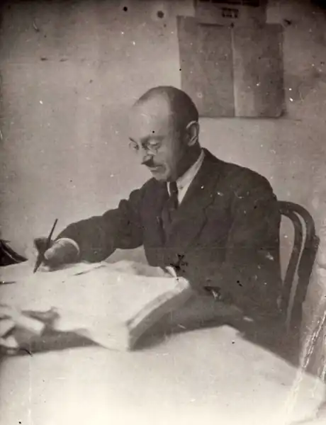
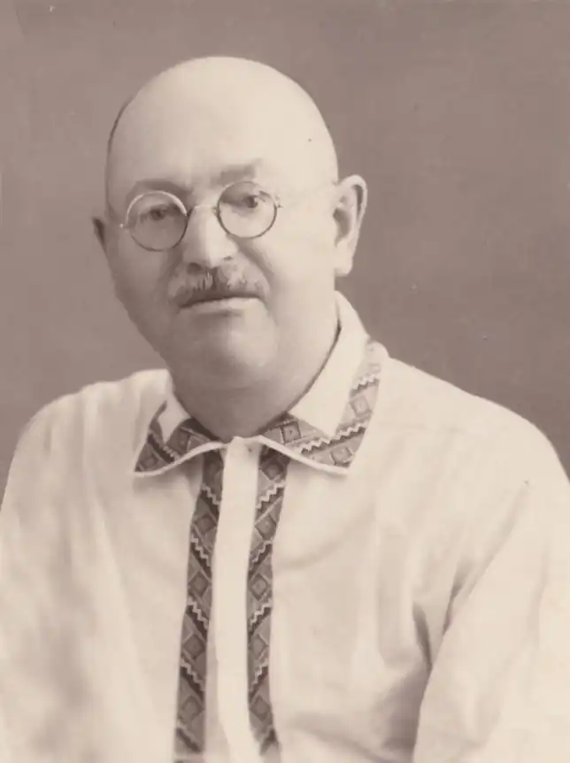

Золотополець Валентин Дмитрович (справжнє прізвище: Отамановський) народився 26 лютого 1893 року в селі Яблунівка Смілянської волості Черкаського повіту Київської губернії, нині Смілянський район Черкаської області.
У багатодітній родині дрібного службовця, рахівника цукроварні графів Бобринських. Дід Валентина був кантоністом ("миколаєвським" солдатом з аракчеєвських поселень) і під час 25-літньої військової служби став фельдшером-практиком, брав участь в обороні Севастополя 1854—1855 рр.
Наприкінці 90-х років ХІХ ст. родина переїхала до Києва. В 1912 р. Валентин закінчив 5-ту Київську гімназію із золотою медаллю і вступив на юридичний факультет Київського університету. В 1913 р. перейшов до Київського політехнічного інституту. У КПІ належав до напівлегальної студентської організації "Українська громада", де працював головою термінологічної комісії при гурткові "Натураліст", складаючи українську наукову термінологію. У 1914-му Отамановський заснував таємну організацію "Братство самостійників", яка сповідувала та поширювала концепти ідеолога української незалежності Миколи Міхновського. "Самостійники" видавали нелегальний друкований орган – "Вільна думка". "Братство" було настільки законспірованим, що про його існування не здогадувався навіть Міхновський, який був знайомий з Отамановським. У березні 1917 року Валентин Отамановський включився в революційні процеси. За його ініціативою був створений штаб української міліції та почалося формування першої кінної сотні. Разом із Міхновським був одним з організаторів товариства "Український військовий клуб імені гетьмана Павла Полуботка". У квітні Всеукраїнський Національний Конгрес обрав Отамановського до складу Центральної Ради, але невдовзі він повернувся до організаційної та літературної діяльності. Це вимагало поглиблених знань, тож Валентин поновився на юридичному факультеті Київського університету. 29 січня 1918 року Отамановський як юнкер Першої Української юнацької військової школи імені Богдана Хмельницького брав участь у бою під Крутами. Аверкій Гончаренко, який командував боєм, згадував, що "Атамановський був відважний, а що найважливіше було у ньому цінного – це завжди прекрасний гумор. У цій рішальній хвилині він почав порівнювати наш бій з боями шведів і наших з москвинами під Полтавою". У 1918 році виїхав на стажування в Австро-Угорщину до Віденського університету. Як представник створеного ним видавництва "Вернигора" відповідав за випуск шкільних підручників, карт, зошитів для українських освітніх закладів. До цього "Вернигора" видало багато листівок і брошур із портретами гетьманів та патріотичними цитатами. До України Отамановський повернувся 1920-го. Оселився у Вінниці, взявся за вивчення історії Поділля. Сюди ж забирав сестру та паралізованого батька. За два роки очолив Вінницьку філію Всенародної бібліотеки ВУАН, пізніше відкрив науково-методичний краєзнавчий центр – Кабінет виучування Поділля, створив у Вінниці комісію з увічнення пам'яті Михайла Коцюбинського, відкрив меморіальну садибу-музей письменника, сприяв збереженню пам'ятних місць, пов'язаних із життям та діяльністю в Ялті Степана Руданського та Лесі Українки. Для дослідницької роботи з вивчення рідного краю він об'єднав навколо себе науковців, аматорів-краєзнавців. Створив бібліотечно-бібліографічну базу для дослідників, проводив просвітницьку роботу. У серпні 1929 року через активне листування з віцепрезидентом ВУАН Сергієм Єфремовим Отамановського заарештовують у сфальшованій справі Спілки визволення України та звинувачують в організації вінницького відділу СВУ. Серед інших безглуздих обвинувачень – участь у змовах, спрямованих на повалення державного ладу, наміри збудувати пам'ятник Петлюрі, "контрреволюційне" перебування у Відні тощо. Вченого засудили до 5 років таборів суворого режиму та 2 років заслання до Татарстану. Після звільнення йому було заборонено виїжджати з Казані, тому заробляв на життя тим, що викладав іноземні мови в медичних вищих навчальних закладах Казані, Ташкента, Краснодара, Саратова – загалом Валентин Отамановський знав сім європейських мов. У 1945 році склад екстерном іспити в Краснодарському педагогічному інституті, щоб отримати диплом історика й допуск до захисту кандидатської дисертації про середньовічну Вінницю, над якою працював у 1920-х. Через 10 років у Ленінградському університеті захистив докторську дисертацію про середньовічні міста Правобережної України. З 1958 року професор Отамановський жив і працював у Харкові, викладав латину в місцевому медичному інституті. Помер 10 березня 1964-го. Довгий час його ім'я було викреслене з радянської історії. Посмертно реабілітований 11 серпня 1989 року.